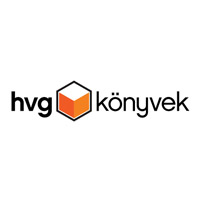
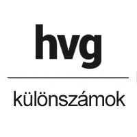

For almost 40 years HVG has been a stalwart supporter of the independent and diverse press and the freedom of speech.
WHO WE ARE
HVG Publishing Group is one of the independent, authentic and innovative content providers in Hungary. We publish magazines, periodicals and books and also operate websites and mobile app sites. The flagship product of the group is HVG (Heti Világgazdaság – Weekly World Economy) a magazine published since 1979. The group’s platform with the biggest reach is hvg.hu visited by more than 1.5 million people every week to seek information, news and analyses. We also organize the biggest job fair – HVG Állásbörze – and scores of other conferences as well.
More than 100 volumes per year (informative books for children among others) and many fully crowded events – that is HVG Books which has become one of the most important publishing houses in Hungary producing best-selling books on business, management, psychology, self-awareness, life style, journalism and biographies.
We work to provide spectacular, interesting and easily understandable multimedia content for our readers and costumers.
Our Values
 knowledge
quality
knowledge
quality
 authenticity
independence
authenticity
independence
 teamwork
teamwork
 ethical operation
flexibility
ethical operation
flexibility
 innovation
innovation
 creativity
creativity
 reader satisfaction
loyalty
courage
reader satisfaction
loyalty
courage
Extras
green environment
 education
team building
biking
table football
education
team building
biking
table football
 running
running
 garden party
coffee, tea
garden party
coffee, tea
 hammocks
movies
hammocks
movies
 theatre
theatre
 XBOX
XBOX
OUR MAIN PRODUCTS
-

-

- 
-

- 
-

-

HVG MAGAZINE
For almost 40 years HVG has been the ultimate weekly newspaper on economic, political and public life in Hungary. The core value of our weekly magazine is providing factual, authentic, trustworthy, objective and independent information for our readers. That is the feature most appreciated by our readers, but they also relish the articles discussing a wide range of interesting themes, background analyses connecting the dots and the international outlook that has traditionally been a strong feature of the magazine.
You can also read HVG in a digital form or through the DHVG mobile app that you can download to your phone or tablet.
HVG.hu
Every week hvg.hu feeds 1.5 million people with news, information and analyses. Our news site pays special attention to Hungarian and global news from the world of economics and public life and works hard to uncover those relationships that could influence our readers’ everyday life and future. The editorials, op-eds and debates in our Opinion section help our readers to make sense of the news and place them in context. One of our most popular sections is Tech-Life. And naturally articles, serials and practical guidance pieces on lifestyle, family, child-upbringing and gastronomy also regularly make their ways onto hvg.hu.
HVG Books
Inspiring books from well-known authors about the newest global trends – that is HVG Books which has become one of the most important Hungarian publishing houses producing best-selling books on business, management, psychology, popular science, self-awareness, life style, journalism and biographies. Among our authors you can find Nobel-laureate scientists, psychologists, economists, physicians, thinkers of great influence and successful businessmen – people like Richard Thaler, Sir Alex Ferguson, Daniel Kahneman, Chris Anderson, Richard Branson, Malcolm Gladwell, Carol S. Dweck, András Feldmár, Erika Stipkovits, Sir Ken Robinson, Dan Ariely, Seth Godin, Charles Handy, János Kornai and Walter Isaacson. Junior HVG Books publishes high-quality, knowledge-based books to develop the imagination and mental capacity of youngsters and to urge them to speak about their experience and to indulge in even more reading.
HVG Extra Publications
Since 2011 HVG Extra has been publishing three quarterly lifestyle periodicals: Psychology, Business and The Woman. The tit-bits of everyday life, career or business – we take these and provide professionally sound and deep knowledge in easily understandable form about them to help our readers to find their way, to think and improve themselves. Our practical approach offers instant, easily adoptable guidance to our readers. Psychology – our most popular periodical – helps people to lead a more self-conscious life and gain a deeper self-awareness. We bring up interesting and informative themes from ordinary situations of life and examine them from the perspective of self-knowledge, couple relationship, family and career. We present fresh and popular content with a professional, authentic and broad approach and in a way that is daring but open to more than one view and thus we inspire to form our readers’ opinion.
HVG-lectures and conferences
Transfer of knowledge and inspiration from a reliable source: HVG lectures and conferences are thoughtful and practice-orientated. Our training courses are prepared in a joint effort with HVG Books and based on our publishing house’s best-selling books on business, management, entrepreneurship psychology and motivation and the latest international trends. In collaboration with well-known Hungarian and international professionals we try to find answers to the challenges and questions presented by various industries and fields of specialty.
HVG Job Fair
The biggest and most important career event of Hungary with more than 200 exhibitors – that is HVG Job Fair (HVG Állásbörze). At the fair most of the career opportunities are offered in the field of engineering, informatics, SSC (with good language skills requirements) and management for students, fresh recruits and experienced professionals as well. We also organize career-building programs, free courses, presentations, workshops and personal consultancies for the participants who can get a glimpse of motivational and skill-development themes at these programs. The participants can also take a close look at a number of new developments and exciting technical innovations at the fair.
Jobline
Since its launching in 2000 HVG’s job website, jobline.hu helped more than 100 thousand job seekers and more than 10 thousand companies to find each other. We work to offer thousands of job opportunities for those who are looking for work. More than 260 thousand people uploaded his or her CVs to jobline.hu and thus creating the biggest searchable CV-database of Hungary where the companies are free to look for the professionals they need. We also publish professional publications to help employees and employers alike and they can also meet us personally twice a year at the biggest Hungarian job fair – at HVG Állásbörze.
Special Issues
HVG Special Issues are thematic publications that offer thorough explanations of and guidance for new laws and regulations for companies. We publish special issues about taxation, social security, labor law and company car fleets. These publications are a must for our professional target groups – tax experts, accountants, lawyers and fleet-managers – who use them on a day to day basis, all year long.
Tax Zone
Adozona.hu is a highly regarded, subscribe-only website dealing with questions and problems concerning taxation. For more than a decade it has been providing fresh content on a daily basis in matters of taxation, public accountancy, social security and labor and company law. In a constantly changing legal environment it offers a reliable assistance to interpret laws and regulations. Because of its highly professional attitude and its up-to-dateness this website is much favored as the daily tool of professionals in the field of tax law.
Eduline
For more than 10 years eduline.hu, our market-leading website specializing on educational themes, has been publishing news and analyses to help those youngsters through the maze of education who are to graduate or to start their college and university years. The website publishes more than 100 news item or entertaining information pieces every week from the world of education. Our goal is to provide fresh, easily understandable and authentic content not only to those who are to graduate and start their life in higher education but to teachers, education experts, parents, people seeking vocational training or young recruits starting their professional career.
HVG COVERS
WHAT PEOPLE SAID ABOUT US

Zsolt Reviczky
journalist/photojournalist
What is so wonderful about HVG? Its urge to inform its readers objectively, the team working here, the high-quality work and professional attitude.
Fanni Czeglédi
journalist
At HVG everybody is an equal member of the team and uniformly dedicated to objectivity, independence and diversity.
Ágnes Kormos
HR-manager
I like that people pay attention to each other and take their jobs seriously. I also like that we are a company not big enough to not to know each other but big enough to everybody have a definite scope of tasks.

Alexandra Ferencz
Scrum master
I have always been very of fond of HVG because of its fine, complex analyses and, last but not least, because of its independence. As soon as I found out that the development department works by the Agile method, I could see that the teams were just big enough to operate by this method effectively.
György Kenyeres
Database analyst
I see HVG as a high-quality brand. I expected well organized working processes and well-trained, ready and helpful colleagues – and I was proven right. And the coffee is excellent too – a surprising extra.

Vivien Vetési
Project manager
I like working for HVG because ideas and suggestions are not only welcomed but also encouraged, just as any critical remarks that are intended to improve matters. I can take on creative and exciting tasks every day and face challenges from which I can learn and develop.

FRUZSINA SZABÓ
Editor-in-chief of eduline.hu
Why HVG? Because I have colleagues whose articles I have been reading since I was 16.
SOCIAL RESPONSIBILITY
Besides taking on the usual journalist tasks and propagating right goals the people who work for the HVG Publishing Group also visit a school in one of Hungary’s underdeveloped regions every year and take the Brainpower Experience Day to the children living there. At this event schoolchildren get a glimpse of knowledge from various fields of science – from the animal world through the environment to playful forms of mathematics – by playing games. Our colleges – who take on the role of game masters – prepare various knowledge-based but funny games based on the Brainpower Books published by HVG Books. In 2017 we visited Körösszakál, while in 2018 it was Tarnabod’s turn.
HVG JAM
Boredom is out of question at HVG Jam.
Throughout the year once or even more times a week we offer tickets to the movies, theatres, concerts, exhibitions or other events to our colleagues.
For those who are more into sports we offer discounts on training courses.